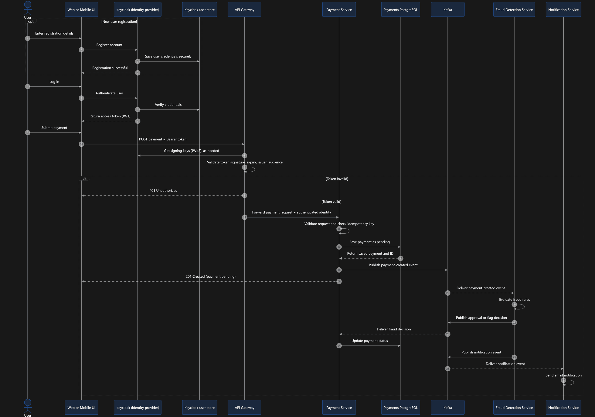

Event-driven microservices
Built an event-driven payment platform of 5 Spring Boot microservices (API gateway, payment, fraud-detection, notification, user-profile/auth) communicating asynchronously over Kafka.
GET /
Java backend engineer building Spring Boot microservices and APIs for financial services
Two years at Deloitte USI on a global asset-management client in a regulated financial environment: GraphQL/REST APIs, production support, SQL performance tuning and event-driven systems with Apache Kafka.
GET /about
I'm a Java backend engineer with 2 years at Deloitte USI, building Spring Boot microservices and GraphQL/REST APIs for a global asset-management client. My work covers production support, SQL performance tuning and event-driven systems with Apache Kafka.
I keep my fundamentals sharp too: 650+ LeetCode problems solved and a 9.11 CGPA.
LinkedIn profileGET /experience
Oct 2024 – Present
Deloitte USI
May 2023 – Jul 2023
HighRadius
KIIT, Bhubaneswar · CGPA: 9.11 / 10
St. Xavier's Intermediate College, Ranchi · 88.6% · 9th State Rank
GET /projects/paynow
An event-driven payment platform of 5 Spring Boot microservices (API gateway, payment, fraud-detection, notification, user-profile/auth) communicating asynchronously over Kafka.
A browser simulation of the real request flow. Packets turn green when approved, red when flagged or rejected, amber on a duplicate retry.
On a phone, scroll sideways. Kafka topic names match the repo: payment.created, payment.decision and the notification topic.

Scroll sideways to follow the flow. Open full size
Built an event-driven payment platform of 5 Spring Boot microservices (API gateway, payment, fraud-detection, notification, user-profile/auth) communicating asynchronously over Kafka.
Secured the gateway and services with OAuth2/OIDC via Keycloak, validating JWT bearer tokens as Spring Security resource servers and deriving sender identity from token claims instead of request payloads.
Implemented idempotent payment creation with idempotency keys backed by a database uniqueness constraint, plus status-transition rules and Liquibase-managed PostgreSQL schemas.
Designed a Kafka pipeline where a fraud-detection service evaluates payment events and publishes approve/flag decisions that update payment status and trigger email notifications.
Sign in. The user logs in through Keycloak, which verifies the credentials and returns a JWT access token.
Call the gateway. The client sends POST payment with the bearer token. The gateway fetches Keycloak's signing keys (JWKS) as needed and checks signature, expiry, issuer and audience. An invalid token gets 401 Unauthorized.
Create the payment. The payment service validates the request, checks the idempotency key, saves the payment as pending in PostgreSQL and returns 201 Created.
Publish the event. The payment service publishes a payment-created event to Kafka.
Evaluate fraud. The fraud-detection service consumes the event, runs its rules and publishes an approve or flag decision.
Update and notify. The payment service updates the payment status from the decision, and the notification service sends the email.
GET /skills